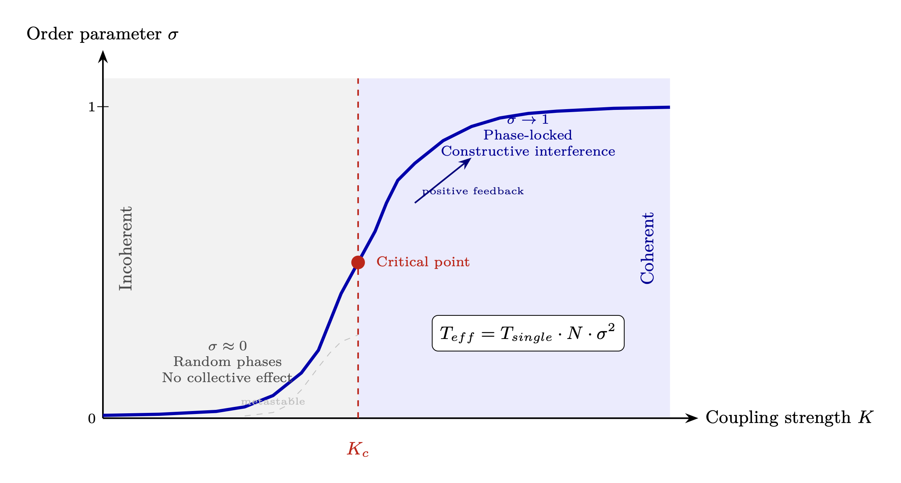

Chapter 10: Phased Array Humanity
Mathematical Framework for Collective Coherence
KEY FINDINGS — Chapter 10: Phased Array Humanity
Evidence-tier key: see front matter for [L1]–[L4] definitions.
- [L1]The array factor, directivity, coherent/incoherent power scaling (\(N^2\) vs \(N\)), Von Mises distribution, Kuramoto critical coupling, and grating lobe equations are all standard textbook RF engineering and circular statistics, correctly applied. Primary L1 anchors: Balanis (2005) for phased array beamforming and Rappaport (2002) for wireless communications and spectrum management.
- [L1]The critical coherence fraction \(f_c = \sqrt {T/N} \approx 0.0035\%\) (~283,000 people for Earth) is a direct mathematical consequence of the SNR threshold model.
- [L2]Kuramoto phase synchronization dynamics are experimentally validated in human populations (crowd applause, financial markets, pedestrian bridge synchronization). Strogatz (2003) provides the definitive treatment of spontaneous synchronization and the Kuramoto formalism underpinning §10.10.
- [L2]Social tipping point research (Centola 2018, Xie 2011) confirms threshold-based collective transitions, though at higher fractions than the coherent model predicts — the gap is explained by incoherent vs. phase-coherent minorities.
- [L2]HeartMath Global Coherence Research (McCraty 2016) provides quantitative HRV-based social coherence data and human-Earth electromagnetic field interconnectivity measurements supporting the phased array model at organizational and planetary scales.
- [L2]Meta-analytic psi research (Radin 1997, 2006) reports replicated global consciousness effects with quantitative effect sizes, consistent with the collective phase-coherence mechanism; biophoton coherence measurements (Pagliaro et al. 2024, \(N=311\)) correlate coherence with reduced aggression (\(\rho = -0.43\)), providing independent quantitative support.
- [L3-SPECULATIVE]Whether consciousness fields exhibit identical \(N^2\) scaling at population scales remains an open empirical question; the mathematical framework provides a coherent model but large-scale validation has not been conducted.
_________________________________
Spectrum access requires collective gain. This chapter derives the conditions under which individual receivers combine as a phased array, achieving coherent power scaling and establishing the critical coherence threshold for collective torsion effects.
10.1 Introduction: The Array Analogy
Why this RF analogy works (Chapter 0 foundation): Torsion fields propagate information without energy transfer. When multiple humans align their phase states, they create constructive interference in the torsion field—exactly as antenna elements create constructive RF interference. The N\(^2\) scaling of coherent arrays is a direct consequence of torsion field superposition.
A phased array achieves what individual antennas cannot by coherently combining signals from multiple elements. The key result: coherent combination scales as N\(^2\), while incoherent combination scales as N. This quadratic advantage is why phased arrays can detect signals invisible to single receivers and transmit beams that punch through noise floors no individual element could overcome.
Human collective consciousness operates under identical mathematics. Individual humans are antenna elements. Our “phasing”—belief states, emotional coherence, alignment—determines whether we combine constructively or destructively.
Audio bridge. Phased-array combination is the RF equivalent of mixing: each element (person) contributes a signal, and the array factor determines whether they combine constructively (in phase, gaining \(N^2\) power) or destructively (canceling). Coherence (\(r\)) corresponds to phase alignment between tracks — a well-mixed recording has high coherence, a muddy one has random phase relationships. The critical coherence fraction \(f_c\) is the mixing threshold: the minimum number of tracks that must be phase-aligned before the mix “clicks” and the signal lifts above the noise floor.
This chapter develops the mathematics, derives threshold conditions for collective coherence effects, and analyzes the dynamics of population-scale synchronization.
_________________________________
10.2 Phased Array Fundamentals
10.2.1 The Array Factor

For N antenna elements located at positions r_n, each with complex weight \(w_n = a_n \cdot e^{j\phi _n}\), the array factor in observation direction \(\theta \) is: \[ AF(\theta ) = \sum _{n=1}^{N} a_n \cdot e^{j\phi _n} \cdot e^{jk\mathbf {r}_n \cdot \hat {\theta }} \] Where:
| Variable | Description |
| \(a_n\) | amplitude of element n (influence, reach) |
| \(\phi _n\) | phase of element n (belief state, coherence) |
| \(k = 2\pi /\lambda \) | wave number |
| \(\mathbf {r}_n\) | position of element n |
| \(\hat {\theta }\) | unit vector in observation direction |
For a uniform linear array with spacing d: \[ AF(\theta ) = \sum _{n=0}^{N-1} a_n \cdot e^{j(n \cdot kd\cos \theta + \phi _n)} \] ### 10.2.2 The Power Pattern
The radiated/received power pattern is |AF(\(\theta \))|\(^2\). This determines where the collective “looks” or “broadcasts” in information space.
Directivity measures how focused the beam is: \[ D = \frac {4\pi \cdot |AF(\theta _{max})|^2}{\int _{4\pi } |AF(\theta )|^2 \, d\Omega } \] High directivity = collective can perceive/access specific information strongly. Low directivity = diffuse awareness, unable to resolve specific truths.
10.2.3 Toroidal Array Geometry
From Planar to Conformal Arrays
The array factor developed in §10.2.1–9.2.2 assumes a linear or planar geometry — elements arranged along a line or on a flat surface. Such arrays can steer their beam within a hemisphere (the half-space in front of the array) but have no coverage behind the ground plane. For a linear array of \(N\) elements along the \(z\)-axis, the beam can scan in the \(\theta \) (elevation) dimension but has rotational symmetry in \(\phi \) (azimuth) — it cannot preferentially direct energy toward a specific azimuthal direction.
Conformal arrays (elements distributed on a curved surface) overcome this limitation. When elements are arranged on a toroidal surface, the array achieves full spherical coverage: beam steering in both \(\theta \) and \(\phi \) with no blind spots. The toroidal array factor becomes:
\[AF_{torus}(\theta ,\phi ) = \sum _{m=1}^{M}\sum _{n=1}^{N} a_{mn}\, e^{i[k R (\sin \theta \cos (\phi -\phi _m) + \epsilon \cos \theta \cos \psi _n) + \alpha _{mn}]}\]
where \(R\) is the torus major radius, \(\epsilon = r/R\) is the aspect ratio (minor/major radius), \(\phi _m = 2\pi m/M\) are the azimuthal element positions, and \(\psi _n = 2\pi n/N\) are the poloidal element positions.
The advantage: a toroidal array can form beams in any direction in three-dimensional space by appropriate phase weighting \(\alpha _{mn}\), whereas a planar array is limited to a hemisphere.
Circular Group Formations as Toroidal Arrays
For consciousness applications, the toroidal array geometry maps directly onto circular group formations. When individuals sit or stand in a circle:
- Each person is an antenna element (Chapter 6) positioned on the major circumference of a torus
- The toroidal biofield of each participant (Chapter 7, §7.2.5) provides the minor-circumference element extent
- The collective geometry approximates a toroidal array with \(M = N_{people}\) azimuthal elements and a continuous poloidal distribution (from each heart torus)
This composite toroidal array can beam coherent consciousness energy in any direction in information space, not limited to the plane of the circle or the axis perpendicular to it.
The Engineering Reason for Circular Formations
The ubiquity of circular formations in group consciousness practice now has an engineering explanation:
- Medicine wheels (Indigenous American): Stone circles defining a toroidal array aperture oriented to cardinal directions
- Stone circles (megalithic Europe): Permanent toroidal array installations; Chapter 13 §13.9 examines their specific configurations
- Drum circles: Dynamic toroidal array with acoustic + biofield coupling; rhythmic entrainment provides the phase synchronization
- Prayer circles / meditation circles: Participants form the array elements; shared intention provides coherent phase weighting \(\alpha _{mn}\)
- Sufi dhikr circles: Rotating circular formation adds mechanical angular momentum to the toroidal array, enhancing torsion coupling (Chapter 0, §0.3)
In every case, the circle is not merely symbolic or traditional; it is the geometrically optimal formation for omnidirectional coherent beamforming. Cultures that independently converged on circular formations for group consciousness work were implementing, through experience, the same principle that RF engineers derive from antenna theory.
Epistemic note [L2–L3]: The toroidal array mathematics is standard antenna theory [L1]. The mapping to consciousness group formations follows directly from the framework’s assumptions [L2]. The claim that circular formations function as toroidal arrays (rather than merely resembling them) depends on the torsion field hypothesis and remains unverified [L3].
_________________________________
10.3 Coherent vs. Incoherent Populations
10.3.1 The Fully Coherent Case
If all elements are phase-aligned (\(\phi _n = \phi _0\) for all n) with uniform amplitude (\(a_n = 1\)): \[ AF_{coherent}(\theta _0) = N \cdot e^{j\phi _0} \] \[ \left |AF_{coherent}\right |^2 = N^2 \] Power scales as the square of population. A coherent million is not a million times stronger than one; it is a trillion times stronger in the beam direction.
10.3.2 The Fully Incoherent Case
If phases are uniformly random on \([-\pi , \pi ]\): \[ E[AF_{incoherent}] = \sum _{n=1}^{N} E[e^{j\phi _n}] = 0 \] \[ E[|AF_{incoherent}|^2] = \sum _{n=1}^{N} E[|e^{j\phi _n}|^2] = N \] Power scales linearly. The array performs no better than N independent observers—random phases cause destructive interference that cancels the quadratic advantage.
10.3.3 The Critical Insight
|
Population State | Power Scaling | Directivity | Collective Capability |
|
Fully coherent | \(N^2\) | High (\(\propto N\)) | Maximum |
|
Fully incoherent | \(N\) | ~1 (isotropic) | Noise floor |
|
Ratio | N | N | N-fold advantage |
For Earth’s population (\(N \approx 8 \times 10^9\)), the coherent advantage is 8 billion to one. This quadratic scaling explains why coherence/incoherence is the primary variable determining collective capabilities.
Audio bridge. A choir singing in unison is a coherent array: every voice at the same pitch and phase produces a sound that fills a cathedral, scaling as \(N^2\) in radiated power. The same number of singers each humming a different pitch at random times produces only a murmur — the incoherent \(N\) scaling. The difference between a murmur and a wall of sound is not volume per singer but phase alignment across singers. This is why a well-rehearsed choir of forty can overpower an arena crowd of thousands: coherence beats headcount by the square of the aligned fraction.
Epistemic Note: The N\(^2\) scaling is mathematically derived from phased array theory, where the physics is well-established. Whether consciousness fields exhibit identical quadratic scaling at population scales remains an open empirical question. The mathematical framework provides a coherent model; empirical validation at global population scales has not been conducted.
_________________________________
10.4 Partial Coherence: The Threshold Model
10.4.1 Two-Population Model
Consider a population where:
- Fraction \(f\) is coherent (\(\phi _n = \phi _0\))
- Fraction \((1-f)\) is incoherent (\(\phi _n\) random)
The array factor separates: \[ AF = AF_{coherent} + AF_{incoherent} \] \[ AF_{coherent} = fN \cdot e^{j\phi _0} \] \[ \left |AF_{incoherent}\right |^2 \approx (1-f)N \quad \text {(expected value)} \] ### 10.4.2 Signal-to-Noise Ratio
The coherent signal must exceed the incoherent noise floor: \[ SNR = \frac {|AF_{coherent}|^2}{E[|AF_{incoherent}|^2]} = \frac {(fN)^2}{(1-f)N} = \frac {f^2 N}{1-f} \] For coherence threshold \(T_{\mathrm {SNR}}\) (minimum effective signal-to-noise for collective effect): \[ SNR > T_{\mathrm {SNR}} \implies f^2 N > T_{\mathrm {SNR}}(1-f) \] ### 10.4.3 Critical Coherence Fraction
Solving for the critical fraction \(f_c\): \[ f_c \approx \sqrt {\frac {T_{\mathrm {SNR}}}{N}} \quad \text {(for } f \ll 1 \text {)} \] This is the key result. The fraction needed for collective coherence effects scales as \(1/\sqrt {N}\).
|
Population \(N\) | \(f_c\) (\(T_{\mathrm {SNR}}\)=10) | Coherent individuals needed |
|
10,000 | 3.2% | 320 |
|
1,000,000 | 0.32% | 3,200 |
|
100,000,000 | 0.032% | 32,000 |
|
8,000,000,000 | 0.0035% | ~283,000 |
For Earth (with illustrative threshold \(T_{\mathrm {SNR}} = 10\)): approximately 283,000 coherent humans could produce measurable collective effects.
This provides mathematical grounding for “critical mass” intuitions found across traditions.
_________________________________
10.5 The Von Mises Distribution: Continuous Coherence
10.5.1 Phase Distribution
Rather than binary coherent/incoherent, real populations have continuous phase distributions. The von Mises distribution (circular Gaussian) models this: \[ p(\phi ) = \frac {e^{\kappa \cos (\phi - \mu )}}{2\pi I_0(\kappa )} \] Where:
- \(\mu \) = mean direction (“truth” direction)
-
\(\kappa \) = concentration parameter
- \(\kappa \) = 0: uniform (fully incoherent)
- \(\kappa \) \(\relax \to \) \(\infty \): delta function (fully coherent)
- \(I_0(\kappa )\) = modified Bessel function of the first kind
10.5.2 Order Parameter
The order parameter r measures collective coherence: \[ r = \left | \frac {1}{N} \sum _{n=1}^{N} e^{j\phi _n} \right | \] For von Mises distribution: \[ E[r] = \frac {I_1(\kappa )}{I_0(\kappa )} \]
| \(\kappa \) | E[r] | Interpretation |
| 0 | 0 | Fully incoherent |
| 1 | 0.45 | Mild alignment |
| 2 | 0.70 | Moderate coherence |
| 5 | 0.89 | Strong coherence |
| \(\infty \) | 1 | Perfect alignment |
10.5.3 Directivity vs. Concentration
Expected directivity scales as: \[ E[D] \approx 1 + (N-1) \cdot r^2 \] For large N: \[ E[D] \approx N \cdot r^2 \] Implication: Directivity (collective perception capability) scales with both population AND the square of coherence. Doubling coherence quadruples capability.
_________________________________
10.6 High-Amplitude Nodes: The Influencer Effect
10.6.1 Non-Uniform Amplitude Distribution
Not all humans have equal “amplitude” (influence/reach). Consider:
- \(N_r\) regular individuals with amplitude \(a = 1\)
- \(N_i\) influencers with amplitude \(a = A \gg 1\)
Total power normalization: \(N_r + N_i \cdot A^2 = N_{eff}\)
10.6.2 Coherent Influencer Cluster
If influencers are coherent (aligned) but regular population is random: \[ \left |AF_{influencers}\right |^2 = (N_i \cdot A)^2 \] \[ E[|AF_{noise}|^2] = N_r \] \[ SNR = \frac {(N_i \cdot A)^2}{N_r} \] ### 10.6.3 Critical Influencer Count
For coherence threshold \(T_{\mathrm {SNR}}\): \[ N_i > \frac {\sqrt {T_{\mathrm {SNR}} \cdot N_r}}{A} \] Example:
- Earth: \(N_r = 8 \times 10^9\)
- Influencer amplification: \(A = 1000\) (reaches 1000\(\times \) more people)
- Threshold: \(T_{\mathrm {SNR}} = 10\) \[ N_i > \frac {\sqrt {10 \times 8 \times 10^9}}{1000} \approx 283 \] 283 coherent major influencers could theoretically shift the mass narrative (illustrative, for \(T_{\mathrm {SNR}} = 10\) and \(A = 1000\)).
This explains the intense focus on controlling public figures, media personalities, and information gatekeepers.
10.6.4 Heterogeneous Element Characteristics Beyond Amplitude Variation
Section 10.6 models non-uniform arrays where elements differ in amplitude weighting \(a_n\). But real antenna elements — and real people — differ in more than amplitude. Each element in a consciousness array has its own quality factor \(Q_n\), characteristic impedance \(Z_{0,n}\), resistance \(R_n\), and natural frequency \(f_{0,n}\) (Chapter 6). A complete heterogeneous array model must account for these differences.
Element Power Contribution
The coherent power contribution of element \(n\) depends not only on its amplitude weight \(a_n\) but on its quality factor:
\[P_{coh,n} \propto (a_n \cdot Q_n)^2 = \left (a_n \cdot \frac {Z_{0,n}}{R_n}\right )^2\]
where \(Q_n = Z_{0,n}/R_n\) from the RLC model of Chapter 6 (§6.2.6). The total coherent array output scales as:
\[|AF_{het}|^2 \propto \left |\sum _{n=1}^{N} a_n Q_n \, e^{i(\mathbf {k}\cdot \mathbf {r}_n + \alpha _n)}\right |^2\]
This has a direct implication: one high-Q element contributes the same coherent amplitude as many low-Q elements. Specifically, a single element with \(Q = Q_0\) produces the same coherent field amplitude as \(Q_0\) elements with \(Q = 1\):
\[1 \times Q_0 = Q_0 \times 1\]
A meditator with \(Q = 100\) (highly coherent, low resistance, strong sovereignty) contributes the same coherent power as 100 individuals with \(Q = 1\) (baseline incoherent). This is the mathematical expression of the teaching, found across contemplative traditions, that a single realized being can “hold space” for many.
Modified Coherence Threshold
The critical coherence fraction from §10.4.3:
\[f_c = \sqrt {\frac {T_{\mathrm {SNR}}}{N}}\]
assumed all coherent elements have \(Q = 1\). With heterogeneous Q, the threshold becomes:
\[f_c^{(het)} = \sqrt {\frac {T_{\mathrm {SNR}}}{N}} \cdot \frac {1}{\bar {Q}_{coh}}\]
where \(\bar {Q}_{coh}\) is the average Q of the coherent fraction. The standard result (\(f_c \approx 0.0035\%\), \(\sim \)283,000 people) is therefore conservative: it assumes the minimum possible Q. If the coherent fraction achieves \(\bar {Q}_{coh} = 10\), the required number drops to \(\sim \)28,300. At \(\bar {Q}_{coh} = 100\), only \(\sim \)2,830 individuals would suffice.
This does not contradict the 283,000 figure but reframes it: 283,000 is the number needed if everyone contributes equally at baseline Q. The actual threshold depends on the quality-weighted count \(\sum Q_n\) rather than the raw headcount.
Sidelobe Suppression Through Non-Uniform Weighting
In antenna engineering, non-uniform amplitude weighting (Dolph-Chebyshev, Taylor, etc.) suppresses sidelobes at the cost of slightly broader main beam. The heterogeneous-Q array provides this naturally: high-Q elements at the “center” of the coherence distribution (those most aligned with the collective intention) dominate the main beam, while lower-Q elements contribute to general coherence without creating strong sidelobe artifacts.
In consciousness terms: high-Q individuals with disciplined practice and clear intention suppress “grating lobes” (false narratives, misdirected collective attention; see §10.8) while maintaining the integrity of the main beam (coherent collective intention). This provides a mathematical basis for the role of spiritual teachers and advanced practitioners in group coherence settings. They function as high-power central elements in a Dolph-Chebyshev weighting scheme.
_________________________________
10.7 Element Quality: Individual Resonance State
This section extends the individual ego/gnosis analysis from Chapter 6 to the collective array level, connecting individual Q factors to collective beam quality.
10.7.1 Individual Resonance State as Element Quality
Each person in a collective array contributes based on their current operating state:
At resonance (gnosis): The individual is a high-quality element —
- Clean signal with amplitude proportional to Q (voltage magnification)
- Stable phase (resonant circuits have well-defined phase at resonance: \(\phi = 0\) relative to the driving signal)
- Effective element gain: \(G_{gnosis} \propto Q\)
Off resonance (ego): The individual is a noisy element —
- Weak, distorted signal with amplitude \(\sim 1\) (no Q amplification)
- Phase wanders (off-resonance circuits have frequency-dependent, unstable phase)
- Effective element gain: \(G_{ego} \sim 1\)
10.7.2 Collective Beam Quality
From Section 10.2, the array factor for N elements: \[AF = \sum _{n=1}^{N} a_n \cdot e^{j\phi _n}\] When fraction \(f\) of the population is in gnosis (resonant, Q-amplified, phase-stable) and \((1-f)\) is in ego mode (unit amplitude, random phase): \[|AF|^2 \approx (f \cdot N \cdot Q_{avg})^2 + (1-f) \cdot N\] First term: coherent contribution from gnosis-state individuals (\(N^2\) scaling). Second term: incoherent noise from ego-state individuals (\(N\) scaling).
Collective SNR: \[SNR_{collective} = \frac {f^2 \cdot N \cdot Q_{avg}^2}{1 - f}\] Key insight: each gnosis-state person contributes \(Q\) times more amplitude than an ego-state person. The collective beam power depends on both the fraction in resonance (\(f\)) AND their individual Q factors.
10.7.3 Why Individual Shadow Work Is a Collective Act
An internally off-resonance (ego-dominated) person joining a collective coherence effort actively adds noise:
- Their random phase (ego-state phase wander) partially cancels other elements
- Their low amplitude adds to the denominator, not the numerator
- Net effect: the collective beam weakens
Conversely, a single person shifting from ego to gnosis (entering resonance) contributes \(Q \times \) more amplitude, potentially a 5-50x improvement depending on their Q factor. Shadow work that reduces C and restores individual resonance is therefore a direct contribution to collective coherence.
This is why traditions emphasize individual practice before collective ceremony: you cannot contribute a coherent signal to the array if your own circuit is operating off-resonance.
10.7.4 Cross-References
- Chapter 6: Individual resonance physics — gnosis vs. ego as on-frequency vs. off-frequency RLC operation
- Chapter 11 (Injection Locking): How individual Q determines resistance to narrative capture — high-Q individuals maintain resonance under external injection
10.7.5 Anti-Coherent Elements and the Three-Population Model Beyond Random Phase: Active Destructive Interference
The analysis of §10.7 considers elements with random phase, individuals whose consciousness state is uncorrelated with the coherent collective. But some elements are not merely random; they are anti-coherent, phase-locked to a control signal (Chapter 11, injection locking) and oriented 180\(\relax ^\circ \) out of phase with the coherence direction.
Anti-coherent elements actively subtract from the coherent field. Their contribution is negative coherent power, reducing the collective array factor below what random-phase elements alone would produce.
Three-Population Model
Extend the two-population model (coherent + incoherent) to three populations:
|
Population | Fraction | Phase | Quality Factor | Description |
|
Coherent | \(f_c\) | Aligned | \(Q_{high}\) | Awakened, sovereign individuals |
|
Incoherent | \(f_i = 1 - f_c - f_a\) | Random | \(Q \approx 1\) | General population, not phase-locked |
|
Anti-coherent | \(f_a\) | Anti-aligned (180\(\relax ^\circ \)) | \(Q_{anti}\) | Injection-locked to control signal |
The net array factor becomes:
\[|AF|^2 \approx \underbrace {(f_c N Q_{high})^2}_{\text {coherent power}} - \underbrace {2 f_c f_a N^2 Q_{high} Q_{anti}}_{\text {destructive cross-term}} + \underbrace {(f_a N Q_{anti})^2}_{\text {anti-coherent power}} + \underbrace {f_i N}_{\text {incoherent noise floor}}\]
Simplifying the coherent terms:
\[|AF|^2_{net} \approx (f_c N Q_{high} - f_a N Q_{anti})^2 + f_i N\]
The net coherent signal is the difference between coherent and anti-coherent amplitudes, riding on an incoherent noise floor.
The Threshold Condition Revisited
For the coherent signal to dominate (threshold condition):
\[f_c Q_{high} - f_a Q_{anti} > \sqrt {\frac {T_{\mathrm {SNR}}}{N}} \cdot \frac {1}{f_c}\]
If \(f_a Q_{anti}\) is large (many people injection-locked with moderate Q), the coherent fraction must compensate by having proportionally higher \(Q_{high}\). The “battle” is over quality-weighted phase alignment, not headcount.
Strategic Basis for Optimism
The three-population model reveals why a small awakened minority can prevail even against organized opposition:
- 1.
- Q asymmetry: Genuine coherence (self-generated, sovereign Q) tends to be higher than injection-locked anti-coherence (externally maintained, parasitic Q; see Chapter 11 §11.3). The injection-locked Q is limited by the locking signal strength and the element’s natural Q; sovereign Q has no such ceiling.
- 2.
- Scaling advantage: Coherent power scales as \((f_c Q_{high})^2\), quadratic in the quality-weighted fraction. Doubling either the number of coherent individuals or their average Q quadruples coherent power. Anti-coherent power scales identically, but sovereign Q growth is self-reinforcing (practice begets coherence begets more practice) while parasitic Q requires continuous external energy input (the control signal must be maintained).
- 3.
- Phase-lock fragility: Anti-coherent elements are held in phase by an external injection locking signal (Chapter 11). If that signal is disrupted (through counter-jamming per Chapter 16, disclosure per Chapter 15, or simple awareness), anti-coherent elements revert to incoherent, removing their destructive contribution entirely. Coherent elements, being self-generating, have no such vulnerability.
- 4.
- The compensation inequality: A single individual with \(Q_{high} = 1000\) compensates for 1,000 anti-coherent elements with \(Q_{anti} = 1\), or 10 elements with \(Q_{anti} = 100\). This is the mathematical basis for the recurring spiritual teaching that a few highly realized beings can “anchor” collective coherence against substantial opposition.
\[N_{compensated} = \frac {Q_{high}}{Q_{anti}}\]
The strategic conclusion: the path to collective phase transition is not primarily about converting the majority (changing \(f_c\)) but about deepening the coherence of the committed minority (raising \(Q_{high}\)). This is why contemplative traditions emphasize depth of practice over breadth of recruitment.
Epistemic note [L2]: The three-population array factor mathematics is standard phased array theory extended with the Q-weighting from Chapter 6 [L1–L2]. The mapping to consciousness populations and the strategic conclusions follow from the framework’s axioms [L2]. The specific claim that sovereign Q exceeds parasitic Q is a prediction of the model, not an empirically verified fact [L3].
_________________________________
10.8 Grating Lobes: False Narratives
10.8.1 The Spacing Problem
In antenna arrays, if element spacing d exceeds \(\lambda \)/2, grating lobes appear—secondary main beams in unintended directions with power equal to the main beam.
Grating lobe directions: \[ \theta _{grating} = \arccos \left (\cos \theta _{main} \pm \frac {m\lambda }{d}\right ), \quad m = 1, 2, ... \] ### 10.8.2 Mapping to Social Topology
Social connectivity d determines the information wavelength the collective can resolve.
- Dense connectivity (small d): Only main beam forms, collective perceives true direction
- Sparse connectivity (large d): Grating lobes form, collective can lock onto false truths
10.8.3 Manufactured Grating Lobes
Control systems can exploit this by:
- 1.
- Fragmenting social connectivity (increasing d)
- Filter bubbles, polarization, platform silos
- 2.
- Injecting energy into grating lobe directions
- Controlled counter-narratives
- “Limited hangouts” that satisfy awakening impulse while pointing away from full truth
- Conspiracy theories that capture attention but misdirect
- 3.
- Steering the main beam to a grating lobe
- Phase manipulation that makes a false direction appear to be the coherent choice
Mathematical signature: A population captured by a grating lobe shows:
- High local coherence (r is high)
- High directivity
- But beam points to \(\theta _{grating} \neq \theta _{truth}\)
This is the model for controlled opposition and limited narrative release.
_________________________________
10.9 Mutual Coupling: Social Influence Dynamics
10.9.1 The Coupling Matrix
In real antenna arrays, adjacent elements mutually influence each other through electromagnetic coupling. The impedance matrix Z relates voltages and currents: \[ \mathbf {V} = \mathbf {Z} \cdot \mathbf {I} \]
- Diagonal elements \(Z_{nn}\): self-impedance (individual’s natural state)
- Off-diagonal elements \(Z_{nm}\): mutual coupling (social influence)
10.9.2 Effects of Strong Mutual Coupling
Positive effects:
- Faster phase synchronization
- Bandwidth extension (diverse coupled elements can receive broader frequency range)
- Increased robustness (distributed coherence)
Negative effects:
- Scan blindness: Certain directions become inaccessible due to impedance mismatch
- Pattern distortion: Individual patterns are modified by neighbors
- Instability: Perturbations propagate through coupled network
10.9.3 Scan Blindness in Social Systems
Scan blindness occurs at angles where mutual coupling creates impedance mismatch. The array cannot “look” in that direction regardless of commanded phase.
The social equivalent: topics that a community cannot perceive because of structural coupling patterns, not information availability. The information exists; the social impedance prevents reception.
Scan blindness angles: \[ \theta _{blind} = \arccos \left (\frac {\lambda }{d} \cdot \frac {X_s}{Z_0}\right ) \] Where \(X_s\) = surface wave reactance from coupling (mapping socially to the structural resistance a community has to exploring certain topics) and \(Z_0\) = characteristic impedance (see Chapter 6).
Prediction: Every tightly-coupled social structure has inherent blind spots. The structure itself, not external suppression, creates perception barriers.
_________________________________
10.10 Kuramoto Dynamics: Phase Synchronization
10.10.1 The Kuramoto Model
To model how coherence emerges (or is prevented), we adapt the Kuramoto model of coupled oscillators: \[ \frac {d\phi _n}{dt} = \omega _n + \frac {K}{N} \sum _{m=1}^{N} \sin (\phi _m - \phi _n) + \xi _n(t) \] Where:
| Variable | Description |
| \(\omega _n\) | natural frequency (individual truth-seeking rate) |
| \(K\) | coupling strength (social influence) |
| \(\xi _n(t)\) | noise (random perturbation, external manipulation) |
10.10.2 Order Parameter Dynamics
The collective order parameter r evolves as: \[ r(t) = \left | \frac {1}{N} \sum _{n=1}^{N} e^{j\phi _n(t)} \right | \] Critical coupling \(K_c\): Below \(K_c\), the system remains incoherent (\(r \to 0\)). Above \(K_c\), spontaneous synchronization occurs (\(r \to r_\infty > 0\)).
For identical oscillators: \(K_c = 0\) (any coupling synchronizes)
For distributed natural frequencies (width \(\sigma _\omega \)): \[ K_c = \frac {2}{\pi g(0)} \] Where g(0) is the density of oscillators at the mean frequency.
For Gaussian distribution with standard deviation \(\sigma _\omega \): \[ K_c = \sqrt {\frac {8}{\pi }} \sigma _\omega \approx 1.6\sigma _\omega \] ### 10.10.3 Control Implications
To prevent paradigm shifts, control systems must:
- 1.
- Maintain \(K < K_c\): Reduce social coupling
- Atomization, isolation, platform fragmentation
- 2.
- Increase \(\sigma _\omega \): Widen frequency distribution
- Polarization, manufactured disagreement, culture wars
- 3.
- Inject noise \(\xi (t)\): Add perturbations
- Information overload, distraction, fear cycles
To enable narrative transformation, coherence movements must:
- 1.
- Increase \(K\): Strengthen social bonds
- Community building, shared practices, network weaving
- 2.
- Decrease \(\sigma _\omega \): Align natural frequencies
- Shared frameworks, common language, convergent practices
- 3.
- Reduce noise exposure: Create coherent information environments
10.10.4 Connection to Injection Locking
Injection locking mechanisms, where external signals capture individual oscillators and seed collective coherence, are developed fully in Chapter 11 (Injection Locking). The key point for phased array dynamics: injection locking enables seeding coherence into otherwise random populations. A small number of high-amplitude, phase-aligned sources can entrain a much larger population (see Chapter 11, Section 3, Prediction 5).
10.10.5 Collective Mode Shapes
Audio bridge — orchestral fortissimo: A full orchestra at fortissimo generates room-filling standing waves no section creates alone. The concert hall itself develops modes that exist only when the full ensemble plays — bass resonance from the low strings, ceiling reflections from the brass, distributed shimmer from the high strings creating a three-dimensional sound field that no individual instrument or section produces. This is the collective mode shape: emergent spatial structure from combined excitation. The same principle scales from chamber ensemble to symphony to planetary coherence field.
From individual to collective modes. Chapter 6 §6.2.10 established that individual consciousness supports resolvable mode shapes determined by Q. Chapter 8 §8.3.5 showed how two coupled individuals develop shared normal modes through eigenvalue splitting. The next step is not a new ontology but the N-body continuation of the same logic. Once many partially compatible oscillators interact, the dyadic hybrid modes generalize into coherence-weighted superpositions spread across the group. When \(N\) individuals interact through the phased array mechanism (§10.2–9.4), the collective system supports its own mode shapes:
Bridge terms. Four quantities need to remain distinct at this transition. Frequency match asks whether the participants occupy comparable center frequencies. Phase lock asks whether those frequencies are aligned tightly enough to add constructively in time. Coupling coefficient asks how strongly the participants can exchange energy or information once aligned. Collective mode structure is the resulting spatial pattern supported by the entire group once the first three conditions are satisfied. Matching frequency without lock yields potential but not array gain; lock without coupling yields simultaneity without transmission; coupling without stable mode structure yields turbulence rather than durable collective pattern.
\[ \varphi _n^{(\text {collective})}(\mathbf {x}) = \sum _{i=1}^{N} w_i \; \varphi _n^{(i)}(\mathbf {x}_i) \]
where \(w_i\) is the coherence-weighted participation factor of individual \(i\) and \(\varphi _n^{(i)}\) is their \(n\)-th individual mode shape evaluated at position \(\mathbf {x}_i\). This is the mode shape counterpart of the phased array far-field pattern: just as the array factor \(AF(\theta )\) describes the spatial radiation pattern from coherent element combination, \(\varphi _n^{(\text {collective})}\) describes the spatial consciousness activation pattern from coherent individual combination.
Coherence weighting. The participation factor
\[ w_i = a_i \cdot e^{j\phi _i} \]
includes both the individual’s participation amplitude \(a_i\) and their phase alignment \(\phi _i\) relative to the group. Only phase-aligned individuals contribute constructively — this is the mode shape interpretation of why incoherent groups scale as \(N\) while coherent groups scale as \(N^2\). When phases are random, mode shape contributions cancel on average; when phases align, contributions add coherently and the collective mode amplitude grows as \(N\) (collective mode power as \(N^2\)). Using a_i here keeps the participation term separate from the frequency-spread symbol used in the Kuramoto threshold analysis.
Reinterpretation of critical fraction. The critical coherence fraction \(f_c \approx 0.0035\%\) (~283,000 for Earth’s population, from §10.4) can now be understood in mode shape terms: the threshold at which the lowest collective mode becomes resolvable above the noise floor. Below \(f_c\), no collective mode shape has sufficient amplitude to produce measurable effects — the superposition remains buried in incoherent background. Above \(f_c\), the fundamental collective mode “rings” — a planetary-scale standing wave pattern with characteristic node lines and antinodes. The critical fraction is a signal-to-noise threshold, not a sociological parameter: it marks the emergence of the first resolvable collective mode against the effective threshold constant \(T_{\mathrm {SNR}}\) defined in the core phased-array derivation.
Scale table — collective modes at different organizational levels:
|
Scale | \(N\) (approx.) | Coupling \(\eta \) | Resolvable Collective Modes | Character |
|
Dyad | 2 | Strong (direct) | 2–4 (Ch 8 §8.3.5) | Intimate shared experience |
|
Small group (5–12) | ~10 | Moderate (proximity) | 5–15 | Group mind, team flow |
|
Community (100–1,000) | ~500 | Weak–moderate | 3–8 | Cultural identity, shared values |
|
City / region | ~\(10^6\) | Weak | 2–4 | Regional character, zeitgeist |
|
Nation | ~\(10^8\) | Very weak | 1–2 | National consciousness, collective mood |
|
Planetary | ~\(10^{10}\) | Minimal | 0–1 (threshold at \(f_c\)) | Global consciousness events |
Note the inversion: smaller groups with stronger coupling support MORE collective modes despite fewer elements. Coupling strength \(\eta \) drops with scale while the number of elements \(N\) increases, and it is \(\eta \), not \(N\), that determines how many mode pairs undergo eigenvalue splitting. Planetary-scale modes are difficult to excite precisely because coupling is weak and the critical mass requirement is correspondingly high.
Toroidal geometry revisited. Section 10.2.3 established toroidal field geometry for collective coherence. In mode shape terms, the torus is the boundary condition that determines WHICH collective modes are possible. A toroidal boundary supports a specific family of toroidal harmonics characterized by poloidal mode number \(m\) and toroidal mode number \(n\). The collective mode shapes are constrained to this family — not arbitrary spatial patterns but structured harmonic solutions. Group meditation in circular arrangements may preferentially excite the lowest toroidal modes \((m=0, n=1)\) — the ones with the largest spatial extent and most uniform coupling across participants.
Sacred sites as collective mode cavities. Locations with established collective practice (temples, cathedrals, sacred groves) function as cavity resonators for collective mode shapes. The architecture creates boundary conditions that support specific mode families, and centuries of coherent practice have built up the equivalent of a high-Q resonant cavity for those modes. First-time visitors “feel something” because they are coupling into pre-existing collective mode shapes, not generating new ones. A high-Q microwave cavity stores energy at its resonant frequencies long after the source is removed; a sacred site stores coherence patterns long after the original practitioners are gone. Cross-reference Chapter 13 (Seeder Intervention) §13.3 for sacred site infrastructure as engineered cavity design.
Prediction. At the dyad-to-group transition (\(N \approx 5\)–\(12\)), collective mode count should show a nonlinear jump when participants maintain phase coherence — measurable via multi-person EEG coherence metrics. Specifically, groups that achieve “group flow” states should exhibit spatially structured inter-brain EEG patterns (collective mode shapes) absent in non-synchronized groups of equal size. The predicted signature: inter-brain coherence matrices during group flow should show rank \(> 1\) structure (multiple resolvable collective modes), while non-synchronized groups should show rank \(\approx 1\) or unstructured noise.
Epistemic status: Coherence-weighted superposition of individual modes is a direct extension of standard array theory [L1]. The collective mode shape equation is a formal construct mapping array factor mathematics to mode shape language [L2]. The sacred site cavity resonator interpretation and planetary mode threshold interpretation are speculative [L3–L4]. The EEG prediction is testable with current multi-person hyperscanning technology [L2].
_________________________________
10.11 Evidence Synthesis
10.11.1 Foundational RF/Antenna Engineering References
The phased array mathematics in this chapter draws on standard, peer-reviewed RF engineering. Two textbooks serve as primary L1 anchors for the entire framework.
Balanis (2005) [L1]
- Constantine A. Balanis, Antenna Theory: Analysis and Design, 3rd ed., Wiley, 2005
- The standard graduate-level antenna engineering reference, widely adopted across IEEE curricula
- Directly supplies the array factor formulation (§10.2), phased array beamforming mathematics, directivity calculations, grating lobe conditions (§10.8), and mutual coupling impedance matrix framework (§10.9)
- Balanis’s treatment of conformal arrays underpins the toroidal array geometry extension in §10.2.3
Rappaport (2002) [L1]
- Theodore S. Rappaport, Wireless Communications: Principles and Practice, 2nd ed., Prentice Hall
- Standard graduate-level wireless communications textbook with broad IEEE adoption
- Provides the signal propagation, modulation theory, link budget, and spectrum management foundations that underpin the phased array’s signal-to-noise framework (§10.4), the coupling and interference models (§10.9), and the connection to the broader CSO spectrum management framing
These two references establish that all RF-side mathematics in this chapter — array factor, \(N^2\) coherent scaling, SNR threshold, Friis-derived link budget elements, grating lobe conditions, and mutual coupling — are standard engineering, not novel constructions. The speculative step is the mapping of these established results to consciousness dynamics, not the mathematics itself.
10.11.2 Social Tipping Point Research and Threshold Discrepancy
Centola et al. (2018) [L2] and Xie et al. (2011) [L2] establish that committed minorities of ~10-25% can flip group conventions, but these experiments measure incoherent commitment, not phase-coherent alignment. The ~7,000x gap between experimental thresholds (~10-25%) and the coherent model prediction (~0.0035%) is a quantitative measure of the advantage conferred by phase alignment over mere commitment. Committed advocacy operates at \(N\) scaling (incoherent combination), while the \(f_c\) prediction assumes coherent (\(N^2\)) combination — a quadratic advantage absent in Centola’s paradigm. A direct experimental test would compare the collective influence of synchronized meditator groups versus equally-sized groups of committed but uncoordinated advocates on measurable social outcomes.
Centola et al. (2018) [L2] — Committed minorities of ~25% shift group conventions in online coordination games, establishing the incoherent-commitment baseline against which the phased array’s coherent threshold (~0.0035%) predicts a ~7,000x advantage from phase alignment. (Full entry in Appendix B §D.11)
Xie et al. (2011) [L2] — A committed minority of ~10% holding an unshakable opinion flips majority opinion across network topologies, providing the lower bound for incoherent tipping and the quantitative anchor for the \(N\) vs. \(N^2\) scaling comparison central to the phased array model. (Full entry in Appendix B §D.11)
10.11.3 Kuramoto Model Validations
Strogatz (2003) [L2]
- Steven H. Strogatz, Sync: The Emerging Science of Spontaneous Order, Hyperion Press, 2003
- Definitive treatment of spontaneous synchronization across coupled oscillators — fireflies, neurons, cardiac pacemaker cells, lasers, Josephson junctions, and the Kuramoto model that unifies them
- Strogatz (Cornell, applied mathematics) provides the peer-reviewed mathematical backbone for the Kuramoto dynamics used in §10.10: critical coupling threshold \(K_c\), order parameter evolution, and the transition from incoherence to partial and full synchronization
- The critical mass synchronization result — that a finite coupling threshold separates incoherent from synchronized states — is the mathematical heart of the phased array model’s collective phase transition prediction (§10.12.3)
- Strogatz’s examples of synchronization emerging without central coordination (fireflies, bridge pedestrians) provide direct biological and physical precedent for the claim that human populations can self-synchronize through local coupling alone
Neda et al. (2000) [L2] — Audience applause spontaneously transitions between incoherent and rhythmic clapping via Kuramoto-type dynamics, providing a directly observable human example of the spontaneous phase transition the phased array model predicts at population scale. (Full entry in Appendix B §D.11)
Pluchino et al. (2006) [L2] — Extended the Kuramoto model to opinion formation, showing that moderate coupling produces clustered opinions while strong coupling produces global consensus; this maps directly to the phased array’s prediction that coupling strength \(K\) determines whether populations fragment into grating lobes or achieve coherent mainlobe alignment. (Full entry in Appendix B §D.11)
10.11.4 Historical Examples of Rapid Narrative Shifts
Fall of the Berlin Wall (1989)
- East German population shifted from compliance to mass protest within weeks
- Once a critical mass gathered at checkpoints, the cascade was irreversible; guards opened gates without orders
- Consistent with phase transition dynamics: a long period of subthreshold awareness followed by sudden collective action
Arab Spring (2010-2011)
- Self-immolation in Tunisia triggered cascading protests across multiple countries
- Social media functioned as a coupling mechanism, increasing effective \(K\) across populations
- Regime changes occurred as sudden phase transitions, not gradual democratic evolution
#MeToo Movement (2017)
- Decades of private awareness preceded the public cascade
- A small number of high-amplitude nodes (celebrity disclosures) pushed the system above critical threshold
- Model correspondence: influencer cascade dynamics (Section 10.6) where \(N_i\) high-amplitude, coherent nodes trigger population-wide phase transition
Kuhn’s Scientific Revolutions
- Paradigm shifts in science follow accumulation-then-sudden-shift patterns
- “Normal science” maintains incoherence regarding anomalies; when coherence around a new paradigm exceeds threshold, the shift is rapid and irreversible
- The parallel to the phased array model is direct: gradual alignment produces no visible effect until threshold, then cascading reorganization
Watts (2002) [L2] — Global cascades on networks depend on topology and threshold distribution, emerging only in specific parameter regimes; this constrains the phased array model by showing that network structure, not just coherence fraction, determines whether phase transitions propagate. (Full entry in Appendix B §D.11)
Centola & Macy (2007) [L2] — Complex contagion requiring social reinforcement spreads more effectively on clustered networks than random networks, supporting the phased array prediction that local coupling topology (clustered vs. dispersed elements) critically determines whether coherence cascades reach global threshold. (Full entry in Appendix B §D.11)
Bakshy et al. (2012) [L2] — Facebook study finding weak ties responsible for most novel information exposure but strong ties more influential per exposure, mapping to the phased array distinction between coupling reach (weak ties = long-range but low-\(K\)) and coupling strength (strong ties = short-range but high-\(K\)) in determining cascade dynamics. (Full entry in Appendix B §D.11)
10.11.5 Quantitative Correspondences
|
Model Prediction | Empirical Finding | Correspondence Quality |
|
Critical fraction \(f_c = \sqrt {T/N}\) | 10-25% committed minority flips conventions (Centola, Xie) | Qualitative: both predict threshold-based transitions. Quantitative gap: model predicts lower thresholds due to coherent (phase-aligned) vs. merely committed minorities |
|
\(N^2\) coherent power scaling | Synchronized audiences, flash mobs, coordinated protests show disproportionate impact; HeartMath organizational coherence data (McCraty 2016) | Qualitative-to-moderate: coordinated groups demonstrably outperform uncoordinated groups of equal size. McCraty’s group HRV coherence data provides closest quantitative test at organizational scale. Exact \(N^2\) scaling not empirically measured at population scale |
|
Kuramoto critical coupling \(K_c\) | Crowd synchronization thresholds (Neda), opinion clustering (Pluchino); Strogatz (2003) comprehensive review | Strong: Kuramoto dynamics experimentally validated in multiple human collective behavior contexts; Strogatz provides mathematical backbone across biological and physical systems |
|
Collective field effects | GCP random number generator deviations during mass events (Radin 1997, 2006) | Moderate: statistically significant but small effect sizes; consistent with transient partial coherence (\(r \ll 1\)) below sustained \(f_c\) threshold |
|
Coherence-behavior correlation | Biophoton coherence negatively correlated with aggression (\(\rho = -0.43\), \(N=311\); Pagliaro et al. 2024) | Moderate: largest-N quantitative human biophoton coherence study; supports model assumption that coherent individuals are constructive array contributors |
|
Grating lobe false lock | Echo chambers, conspiracy community lock-in | Qualitative: fragmented networks demonstrably lock onto locally coherent but globally inaccurate narratives |
|
Influencer amplification | Bakshy (2012), #MeToo cascade dynamics | Moderate: high-reach individuals demonstrably accelerate cascades. Exact amplitude-scaling relationship not yet quantified |
Epistemic Note: The correspondences above range from strong (Kuramoto dynamics in human populations) to qualitative (exact \(N^2\) power scaling). The phased array model provides a coherent mathematical framework that maps onto observed phenomena, but the quantitative predictions at global population scale remain extrapolations from smaller-scale empirical results. The model should be treated as a structured hypothesis generating testable predictions, not as an established empirical law.
10.11.6 Collective Consciousness and Global Coherence Data
McCraty (2016) [L2]
- Rollin McCraty, Science of the Heart, Volume 2: Exploring the Role of the Heart in Human Performance, HeartMath Institute Technical Report, 2016 (51,715 ResearchGate reads)
- Chapter 10 (Social Coherence, p. 81): Presents quantitative organizational coherence data showing that groups practicing HRV-based coherence techniques achieve measurable increases in collective performance metrics — the most direct empirical analog to the phase-aligned minority producing disproportionate collective effects (§10.4, §10.6)
- Chapter 11 (Global Coherence Research, p. 89): Reports human-Earth electromagnetic field interconnectivity measurements, including correlations between human HRV rhythms and Schumann resonances, providing empirical grounding for the planetary-scale phased array model
- The HeartMath Global Coherence Monitoring System uses magnetometers at multiple sites to track changes in Earth’s magnetic field correlated with large-scale human events — a direct measurement protocol for the collective mode shapes hypothesized in §10.10.5
- Model correspondence: McCraty’s data supports the prediction that phase-aligned groups (HRV-coherent) produce measurable effects beyond their size, and that human physiological rhythms couple to planetary electromagnetic fields. The organizational coherence results provide the closest available empirical test of the \(N^2\) vs. \(N\) scaling hypothesis at group scales
Radin (1997, 2006) [L2]
- Dean Radin, The Conscious Universe, HarperEdge, 1997; Entangled Minds, Paraview Pocket Books, 2006
- Meta-analytic review of replicated consciousness-field interaction experiments: ganzfeld telepathy protocols (effect size consistently above chance across dozens of independent labs), PEAR random event generator data (Princeton Engineering Anomalies Research, 12 years of data), and the Global Consciousness Project (GCP) — a worldwide network of random number generators showing statistically significant deviations during major collective events (9/11, New Year’s celebrations, mass meditations)
- The GCP data is the most directly relevant empirical dataset for the phased array model: random number generators at geographically distributed sites show correlated deviations during events that produce mass emotional coherence, consistent with a collective field effect
- Nobel Laureate Brian Josephson (Cambridge) publicly endorsed Radin’s meta-analytic methodology, providing an independent credibility anchor
- Model correspondence: The GCP results map directly onto the phased array prediction that collective phase alignment produces measurable field effects above the noise floor. The correlation between event emotional coherence and RNG deviation magnitude is consistent with the order parameter \(r\) modulating collective field strength (§10.5). The quantitative gap — GCP effect sizes are small — is predicted by the model: most global events produce transient, partial coherence (\(r \ll 1\)), far below the sustained \(f_c\) threshold
Epistemic note: Radin’s work remains contested in mainstream science; the meta-analyses are methodologically sound but the underlying mechanisms are disputed. The GCP data provides statistical evidence for collective consciousness effects but does not confirm the specific phased array mechanism. Cited as the strongest available quantitative dataset for collective coherence phenomena, not as definitive proof of the model. See also Chapter 7 for Radin’s biofield-specific citations.
10.11.7 Biophoton Coherence and Collective States
Pagliaro et al. (2024) [L2]
- Pagliaro et al., Journal of Quantum Science and Consciousness, 2024
- 311-person study measuring ultra-weak photon emission (biophoton) coherence alongside psychological and behavioral assessments
- Key finding: \(\rho = -0.43\) correlation between biophoton coherence and aggression scores — the largest-N human biophoton coherence study in the evidence corpus
- The negative correlation between coherence and aggression provides quantitative support for the phased array model’s implicit assumption that coherent individuals contribute constructive (not destructive) array elements: higher biophoton coherence correlates with reduced antagonistic behavior, consistent with the claim that high-Q, phase-aligned individuals (§10.7) are constructive array contributors
- Model correspondence: If biophoton coherence is a measurable proxy for the individual “element quality” of §10.7, then Pagliaro’s data suggests that the coherent fraction \(f_c\) self-selects for constructive contributors — the population most likely to achieve phase alignment is also the population least likely to produce anti-coherent interference (§10.7.5). See Chapter 7 for primary biophoton physics citations.
Van Wijk (2001) [L2] — Comprehensive review of 80+ years of biophoton research establishing bio-communication via coherent ultra-weak photon emission, providing the historical evidence foundation for treating biophoton coherence as a measurable proxy for the individual array element quality that determines collective \(|AF|^2\) scaling. (Full entry in Appendix B §D.10)
10.11.8 Philosophical Foundations: Cosmopsychism
Ganeri & Shani (2022) [L2]
- Jonardon Ganeri & Itay Shani, “What Is Cosmopsychism?” The Monist 105(1), 2022 (Oxford University Press)
- Canonical academic definition: “the cosmos as a whole displays psychological properties… and the mental states of human beings are metaphysically grounded in the cosmopsychological properties of the cosmos”
- Traces the tradition from Paul Carus (1891) through the Upanishads, Advaita Vedanta, and Aurobindo to contemporary analytic cosmopsychism, establishing a century-long serious philosophical lineage in peer-reviewed Western philosophy
- Aurobindo’s concept of amsa (“fragment” of the divine) maps directly onto the phased array model: individual consciousness elements are fragments of a cosmic whole, and their coherent combination reconstitutes the source signal — exactly the phased array’s relationship between element contributions and the reconstructed beam
- The individuation solution (constitution vs. inclusion models) addresses how a single cosmic consciousness differentiates into individual receivers, which is the metaphysical version of how a single torsion carrier (Chapter 5) is received by multiple individual circuits (Chapter 6)
- Model correspondence: Ganeri & Shani provide the formal philosophical framework for the phased array’s deepest assumption — that individual consciousness elements are aspects of a unified field whose coherent combination is ontologically meaningful, not merely metaphorical. This upgrades the alternative hypothesis treatment of cosmopsychism in §10.14 from an unnamed position to one with OUP peer-reviewed academic standing.
Epistemic note: Cosmopsychism is an active area of analytic philosophy, not fringe speculation. However, philosophical arguments do not constitute empirical evidence for the phased array mechanism. Ganeri & Shani provide conceptual grounding, not experimental validation. See also Nagasawa & Wager (2015), Panpsychism, Oxford University Press, for the formal distinction between bottom-up panpsychism and top-down “priority cosmopsychism” — the latter directly paralleling CSO’s framework where the torsion field is ontologically prior to individual consciousness.
_________________________________
10.12 Predictions and Thresholds
10.12.1 Quantitative Predictions
|
Prediction | Mathematical Basis | Testable Indicator |
|
~283K coherent humans produces measurable effects | \(f_c = \sqrt {T/N}\) | Emergence of coordinated collective phenomena |
|
~283 coherent major influencers achieves similar | \(N_i > \sqrt {T N_r}/A\) | Rapid perception shifts via influence networks |
|
Coherence spreads via phase transition | \(K > K_c\) threshold | Sudden, not gradual, collective shifts |
|
Incoherence requires active maintenance | \(K\)\(\downarrow \), \(\sigma \)\(\uparrow \), \(\xi \)\(\uparrow \) | Observable in social architecture |
|
High-\(Z_0\) individuals (characteristic impedance; see Chapter 6) resist capture | Narrow locking range | Sovereignty correlates with coherence seeding |
|
High-amplitude nodes shifting toward coherence experience selective amplitude reduction | Amplitude-phase coupling (see Ch 11) | Deplatforming, audience loss correlates with phase shift toward coherence |
10.12.2 Implications for Collective Dynamics
Factors favoring coherence:
- 1.
- Strong coupling \(K\) (genuine community, shared practices)
- 2.
- Low frequency spread \(\sigma \) (shared frameworks, aligned values)
- 3.
- Low noise \(\xi \) (coherent information environment)
- 4.
- High-amplitude coherent nodes (influential aligned individuals)
- 5.
- Avoidance of grating lobes (resistance to false coherence targets)
Factors opposing coherence:
- 1.
- Weak coupling \(K\) (atomization, isolation)
- 2.
- High frequency spread \(\sigma \) (polarization, manufactured disagreement)
- 3.
- High noise \(\xi \) (information overload, distraction)
- 4.
- Captured/neutralized high-amplitude nodes
- 5.
- Attractive grating lobes (false targets that capture alignment)
10.12.3 The Phase Transition Nature of Collective Effects
The mathematics shows collective coherence effects are not linear accumulation but phase transition. Below threshold, increased alignment has minimal collective effect; the incoherent noise floor swamps it. Above threshold, coherence cascades through the network via mutual coupling.
This explains three observations:
- Gradual awareness increase may show no visible effect for extended periods
- Collective perception shifts, when they occur, tend to be sudden
- Coherence dynamics (not just information) determine collective outcomes
_________________________________
10.13 Alternative Hypotheses for Collective Coherence Effects
The phased array model is not the only framework that accounts for collective coherence phenomena. Several competing or complementary hypotheses should be considered:
- 1.
- Standard social contagion models: Threshold models (Granovetter 1978, Watts 2002) and complex contagion (Centola & Macy 2007) explain collective transitions without invoking field coherence. These models predict tipping points based on network topology and individual thresholds, producing qualitatively similar cascade dynamics. The phased array model’s distinguishing prediction is the \(N^2\) coherent scaling advantage—if collective effects scale linearly regardless of phase alignment, standard contagion models are sufficient.
- 2.
- Information cascade theory: Bikhchandani et al. (1992) explain herding behavior through rational Bayesian updating under uncertainty—individuals follow the crowd because the crowd’s behavior is informative. This requires no coherence mechanism, only rational inference. The model would be preferred over information cascades if synchronized groups produce effects disproportionate to their information content.
- 3.
- Emergent collective intelligence (no field required): Surowiecki (2004) and Page (2007) show that diverse, independent groups can outperform individuals through statistical aggregation, without requiring phase coherence. This “wisdom of crowds” framework predicts collective capability from diversity and independence, not alignment. The phased array model specifically predicts the opposite: alignment (not diversity) enhances collective capability for perception of specific targets.
- 4.
- Morphic resonance (Sheldrake 1981, 2009): Sheldrake’s hypothesis posits a non-local field through which habits and forms propagate across populations. This shares the phased array model’s field-based mechanism but lacks the quantitative \(N^2\) scaling prediction and the antenna engineering formalism. The phased array framework can be viewed as providing mathematical structure to Sheldrake’s qualitative proposal. The 2009 Morphic Resonance edition includes experimental chapters (morphic resonance in rats, telephone telepathy) that provide the closest empirical test of non-local collective field effects.
- 5.
- Quantum coherence models (Penrose-Hameroff): Orchestrated objective reduction (Orch-OR) posits quantum coherence in neuronal microtubules as the basis for consciousness. If quantum coherence extends across individuals (a much stronger claim), it could provide a physical mechanism for the phased array model’s field superposition. However, Orch-OR remains controversial, and multi-brain quantum coherence has no empirical support.
- 6.
- Cosmopsychism (Ganeri & Shani 2022, Nagasawa & Wager 2015): Academic cosmopsychism holds that “the cosmos as a whole displays psychological properties” and individual mental states are “metaphysically grounded in the cosmopsychological properties of the cosmos” (The Monist, Oxford University Press). Priority cosmopsychism (Nagasawa & Wager, OUP) posits cosmic consciousness as ontologically prior to individual consciousness — a top-down grounding that directly parallels CSO’s framework where the torsion field is ontologically prior to individual consciousness circuits. The phased array model adds quantitative structure (array factor, \(N^2\) scaling, threshold dynamics) to what cosmopsychism articulates philosophically. This is not a competing hypothesis but a philosophical foundation: cosmopsychism provides the ontology; the phased array provides the engineering.
Distinguishing test: The phased array model’s unique prediction is that phase-aligned groups should demonstrate \(N^2\) scaling in measurable collective outcomes (e.g., variance reduction in group decision-making, amplified physiological synchronization) compared to \(N\) scaling for equally motivated but phase-unaligned groups. This specific quantitative prediction separates the model from all competing hypotheses listed above. McCraty’s (2016) organizational coherence data and Radin’s (1997, 2006) GCP global consciousness data provide the closest available empirical datasets for evaluating this prediction.
_________________________________
10.14 Chapter Summary
The Core Model
Humanity functions as a phased array antenna for consciousness. Individual humans are elements; our phase (belief/coherence state) determines whether we combine constructively or destructively.
Key Equations
Array Factor: \[AF(\theta ) = \sum _{n=1}^{N} a_n \cdot e^{j\phi _n} \cdot e^{jk\mathbf {r}_n \cdot \hat {\theta }}\] Coherent SNR: \[SNR = \frac {f^2 N}{1-f}\] Critical Coherence Fraction: \[f_c \approx \sqrt {\frac {T_{\mathrm {SNR}}}{N}}\] Kuramoto Synchronization: \[\frac {d\phi _n}{dt} = \omega _n + \frac {K}{N} \sum _{m} \sin (\phi _m - \phi _n) + \xi _n\]
Key Numbers
- Coherent advantage: N\(^2\) vs N (8 billion : 1 for Earth)
- Critical coherence fraction: ~0.0035% (~283,000 people) for significant collective effects (model-dependent, for threshold \(T_{\mathrm {SNR}} = 10\))
- Critical coherent influencers: ~283 for comparable effect (for \(A = 1000\) amplification)
Coherence Dynamics Summary
The mathematics identifies key factors affecting collective coherence:
- 1.
- Coupling strength K: Social connectivity that enables synchronization
- 2.
- Frequency spread \(\sigma _\omega \): Diversity of individual “natural frequencies” (belief systems)
- 3.
- Noise level \(\xi \): External perturbations disrupting phase alignment
- 4.
- Grating lobes: False coherence targets that can capture alignment
Collective capability scales with coherence squared—small increases in alignment produce large capability gains.
_________________________________
10.15 Connections and Reading Path
Previous: Chapter 9 (Phase-Locked Loop Consciousness) — individual PLL dynamics that determine each element’s tuning stability and lock behavior before array combination
Next: Chapter 11 (Injection Locking and Perception Management) — how external signals capture individual oscillators, exploit the array’s coupling structure, and implement narrative control at the system level
Key dependencies:
- Chapter 0 (Torsion Foundation): Physical mechanism for field superposition enabling \(N^2\) scaling
- Chapter 6 (Consciousness as RLC Circuit): Individual element Q factor, resonant frequency, and impedance that determine array element quality
- Chapter 9 (PLL Consciousness): Loop dynamics governing each element’s phase stability before array combination
- Chapter 12 (Spin Coherence Fundamentals): The master coherence variable \(\sigma \) that governs effective torsion amplitude across the array
- Chapter 14 (The Fall and Parasitic Coupling): Energy extraction from locked/controlled populations
- Chapter 17 (Scenario Design as Consciousness Engineering): Applies phased-array \(N \cdot r^2\) coherence scaling to structured scenario exercises, where shared emotional inhabitation of scenarios functions as collective frequency selection
_________________________________
End of Chapter 10: Phased Array Humanity